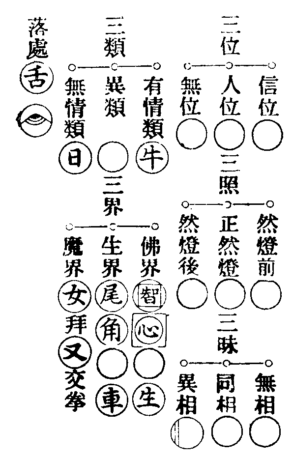
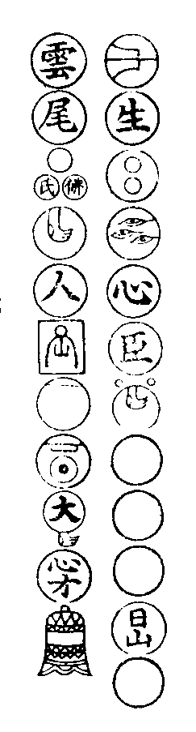
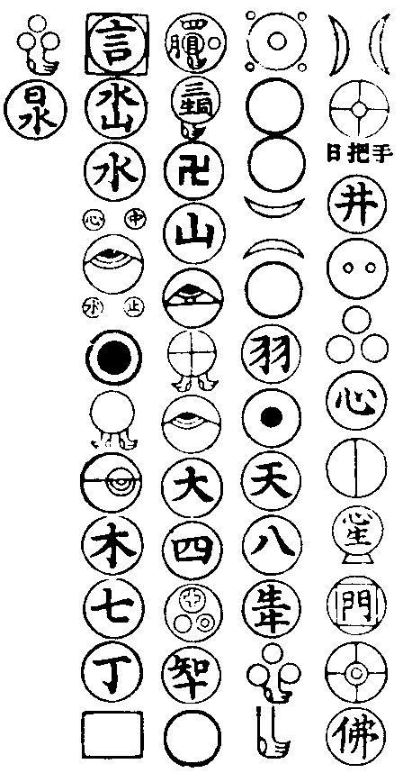

普賢門
卍新纂大日本續藏經 第63冊
No.1256 宗門玄鑑圖 (1卷)
【明 虗一撰】
第 1 卷
直指單傳初無委曲。五宗不傳之妙誰敢舉揚。後來法久成獘生出異端。故五家依門傍戶者。或設為五位君臣。四種料揀。三關九帶。十智同真。門庭各立。互相提唱。雖則一期建立。詎知後代兒孫一箇箇墮在參天荊棘中。枝上牽枝蔓中引蔓。山野自愧不能[囗@力]地一聲為佛祖忠臣。盡焚窠臼。今反將七百陳爛葛藤新飜一遍畫蛇添足。難逃明眼人前白日見鬼矣。
萬曆丁未仲冬少室後參覺虗一識
No. 1256
宗門玄鑑圖
夫信跡者。先聖之蘧廬。後人之龜鏡也。苟昧其源。焉能發明於大事哉。恐後學之流以金沙混用玉石同觀。既迷賓主之談。莫究尊卑之理。由是採古聖機玄之妙。總其綱要作十二門。從流列派各有所歸。自淺及深俱無異趣。名曰玄鑑圖。庶擇法眼詳證焉。各隨門類略示方隅。餘可知矣。
全機盡法門
但有所宗皆不是全機。但有一路亦不放過。皆不盡法。如大慈歸方丈。明覺令南泉打趙州了趕出。又八面四方正好連架打是也。
又其餘麻三斤。九九八十一。青州作一領布衫重七斤半話。一向是無依托。越於格量。故此不取。更有直示密示等方便。如三玄八勢中明。欲知圖之收來所歸。體例細詳。明覺應可見也。
三玄論
彥明上座堂中問天台韶國師曰。宗門舉唱話路大意如何。國師曰。大意不出三玄。問曰何名三玄。國師云。一名實玄。二曰體玄。三曰用玄。問曰何名為實玄。國師云。大凡問答不越常人所談。皆合本分之事。乃名實玄。如僧問趙州云如何是趙州。答曰東門西門南門北門。問云如何是趙州主。答云大王是。又如南泉與數僧行次見池水。又如玉溪長老問法眼如何是正法眼。答云即今見色者是。又如拍毬打地指天吹布毛。隨其學人所問。稱實而應。據斯體例。不露頭角。不越常談。不失機關。皆是本分之事。自古至今為本分實玄。便是宗門極則之法。問云何名為實。答曰。不可以會解推究。無所名之。故謂之實也。問曰何名為玄。答曰。歷歷靈靈。本是如是。故名為玄。問曰何名本分。答云。是他法法非無一物。亦不越常人言談語話行為動作。故為本分。問曰何名不本分。答曰。說作妙覺菩提佛性知見凡聖因果。乃於無所得心中似有一箇無名字及無心得無所得者。皆名不本分。問云何名體玄。答曰。夫體玄者乃是西天龍樹祖師現大月輪真實體也。亦是一切眾生天常真性本然之道。亦是大藏所談極則。亦是古人接機岐路。只如上古拈椎竪拂。舉指輥毬。自喚自應。獅子入窟法。杳然絕朕跡。皆表此本體也。問曰。既是大月輪真如實體性。何以古人破作泥水之談。喚作弄精魂掠虗頭活計耶。答曰。為伊不識向上本分之事。但認浮相謂稱極則。所以破之也。問曰何名用玄。答曰。夫用玄者即是大月輪體上極然之用。從上古人皆用此法接機。如神會振身。大光作舞。普化邈真。從東過西。獅子出窟藏身無路。皆表此大用也。問云。既是不思議極然之用。何以古人破為瓦礫野狐精風力所轉俱無實是耶。答曰。為伊不識向上本色之事。但弄浮相執邪為真。如此破之。問曰。何為古人不肯真說。須假拈椎竪拂委曲指示。答曰。名相之說滯跡多端。疑誤後學恐成支離。柰不獲已所以如此。問曰古人有哭有咲是何也。答曰。笑者多賞。哭者多罸。賞罰不定。問曰。如上三玄論竟。只此三玄為別又有。答曰此外更有三要。問曰何名三要。一者先照後用。二者先用後照。三者照用同時。且
第一先照後用者○。如學人來時。禪主先問從甚麼處來。或云彼師有何言句指示。學人種種言句。禪主反問云作麼生會。據斯體例。古人亦強名照要也。
第二先用後照者◎。如學人來問祖師西來意。或問佛法大意。或問如何是學人本來面目。或問如何是極則事。禪主舉起拂子。或以拄杖便打。或下禪床立。或畫圓相。或呈機要。據斯接機。古人亦強名用要也。
第三照用同時者◑。如學人來發問端。禪主或竪起拂子云諸方還有這箇麼。或指空云會麼。或學人見竪起拂子便禮拜。禪主云這鈍漢。或云學人不會。禪主指露柱云這箇却會麼。學人或展坐具或竪起拳掌。主云這弄精魂漢。據斯接機。古人亦強名照用同時要也。
八棒論
問云。只這是。更別有。答曰。夫於一代宗門。更有數般體例。吾更為汝略陳梗概。且如引機垂語之棒略有八種。問云。何名八棒。
第一觸令支玄棒。今夜不答話。問話者三十棒。時有僧出禮拜。山便打是也。
第二接機從正棒。如僧被打云。某甲未問為甚麼打。山云汝是甚處人。僧云新羅人。山云未踏舡舷好與三十棒。
第四靠玄傷正棒。如大禪佛到仰山翹足乃云。西天二十八祖亦如是。唐土六祖亦如是。和尚亦如是。某甲亦如是。仰山與四棒是也。
第六盲枷瞎煉棒。如長老行棒。學人云出棒出棒。主更無酬對是也。
又苦責愚痴棒。如學人來參。長老種種開示。學人一一不會。長老便打是也。
又如雪峰背負一束藤。路逢一僧便拋下。僧方擬取。雪峯踏倒是也。
八大勢論
第一天真大勢。源其性海離念圓明。不假安立亦曾增減。石頭休宣。百丈捲席。馬祖下座。皆顯本來不動。
第二秘密大勢。如少林壁觀。大寂無聲。目擊道存。
第三平安大勢。四儀盡道。三業都禪。著衣喫飯動轉施為無非佛事。
第四直示大勢。明言問示汝等身中有箇無位真人堂堂出入等。如云和尚誠言焉敢不信。師曰即今便是佛等是也。
第五呈似大勢。如見人來兩手度□拄杖。從東過西。自喚自應。如道吾舞笏是。
第七權設大勢。如宗門中曲垂方便。問實答應權被機害。皆借至理。故得此名。
王子五位圖
一誕生王子。王宮纔降日。玉兔豈能離。未得無功旨。人天何太迷。
二朝生王子。白衣須拜相。此事未為奇。積代簪纓者。休云落魄時。
三末生王子。子時當作正。明暗在君臣。未離兜率界。烏鷄雪上行。
四化生王子。燄裏寒氷結。楊花九月飛。泥牛吼水面。木馬逐雲嘶。
仰山九十六種圓相圖

末門句○ 第一句(方員任器頭角全彰)。
日用句○ 第二句(體用互收名言不立)。
末後句○ 第三句(隱顯無私傍通這畔)。
脩羅三昧擎日月勢

女人三昧羅剎不隱

一垂示三昧門 二問答互喚門 三性起無作門 四緣起無礙門 五明機普互門 六昧合賓主門 七三生不隔門 八即幻明真門 九用了生緣門 十就生顯法門 十一冥府生緣門 十二三境順真門 十三隨機識生門 十四海印收生門 十五密用靈機門 十六碎啄同時門 十七隨隨收放門 十八卷舒無住門 十九一多自在門
洞山五位投子清和尚序
夫長天一色星月何分。大地無偏榮枯自異。是以法無異法何迷悟而可及。心不自心假言像而提唱。其言偏圓正倒兼帶叶通。其法也不落是非豈關萬像。萬像既融於水月。源派派混於金沙。不墮虗凝。回途復妙。
臥龍山雲庵老人評唱五位王子圖頌
正中偏 註曰。古人借黑為正。假白示偏也。切忌當頭。直要傍提。妙會宗祖。如云要頭一任將去。正者是正位也。道箇正位已早落偏。言不當理。本位都無言說。但有言說即屬偏也。偏中不曾離本位。無生那涉語因緣。即是兩意。人在語中圓得。如云不落今時句。妙在未聞前。此是語中圓得底句。亦合兩意。妙在體處。體即正體。不落今時。句句中須虗一位。不得當頭道著。直須玄行始得相應。半夜日頭出。日午打三更。皆是兼中有語也。如云木人半夜穿靴去。石女天明帶帽歸是也。直言露地已前。明妙也。道箇露地白牛明妙法身。猶是文采。直須文彩妙會始得其旨也。
三更初夜月明前 註曰。只是黑白未分時事。黑白兩種亦是文彩未生前。方是正中偏。有云。金殿豁開全體現。往來常在白雲中。月明前此句不墮有無。始得興斷也。
莫恠相逢不相識 註曰。正是父子相見君臣道合。唯一道如如更與阿誰相識。不落第二門頭。此明入宮不異體。為子全身而是父。只是各不相知。臣在門。王不出門。臣不知有君。君亦不知有臣。混然一致。此是兒孫得力。豈得不知隱隱幽暗不彰也。
隱隱猶懷舊日嫌 註曰。初未識時未有箇肯處。見了後方有個肯處。所以道悟了還同未悟時。心無勝負自安寧。正位有云。妙語絕承當。個中無肯路。即是此路也。兩句語非前句後句。中不相似也。只是上下兩句共明一意。
偏中正 註曰。偏乃是今時句。太陽門下事。名有句。正是正體。明月堂前事。名無句。無句是宗。不得昧却。若於有句傍無句宗旨。即是偏中得正也。偏是左右人。正是尊貴人。常要時時奉他。須得心心無間念念無差始得與他相應。是故知有底人始解奉重。輙不得暫時違背。若暫時不在。如同死人。又偏是長老施設處。正是學人承當處。偏中得正也。緣中得正不坐今時。緣是因緣語句。於因緣語句下得意。不滯因緣語跡。通父母未生前事。空劫外事。乃曰緣中得意不坐今時也。只向語中轉去。方有圓位語。言三昧下出身也。為因有語言常通無語之意。從偏入正。方有圓位也。又偏屬於今時。六根六識也。正是那邊。不落今時。只於六根六識下明得那邊人。偏中得正。
失曉老婆逢古鏡 註曰。彰也。將之道不別有也。本來面目自此而彰也。方信道不從人得也。古鏡者。雪峯云。此事如古鏡。胡來胡現。漢來漢現。又玄中銘。夜明簾外古鏡徒輝。又云。打破鏡來與你相見。此意照在。體無依。通身合大道。即是入正偏而來也。
爭柰迷頭還認影 註曰。認著不堪。不是本來頭。如演若達多迷頭認影。認著依前還不是也。
正中來 註曰。入宮無異體。出塞將軍才。此是回途轉位。戴角披毛。何異類中來也。嘶風不及處。妙旨玄中分也。須今時中來常。要不落於今時也。
無中有路隔塵埃 註曰。古人得位後方得轉身退位。從無入有。不借而借。此是轉身一路也。有句云。受陰托胎全得妙。塵塵剎剎現全身。塵埃撲落非他物。蹤橫不是塵。妙中忽有句。句中忽有妙。妙在體處。此是玅中有句也。句中無得。如紅爐焰裏蓮。看時有分。取即不可。此是句中無得也。
但能不觸當今諱 註曰。未審當今諱箇甚麼。問取通事舍人去。誰敢道著。只要不犯當頭。任從滄海變。諱依傍這個不拋於位。依傍這箇是叶通之語。這箇是左右人位。是主位正位也。不拋位者。常要時中奉重。不得暫時拋位。若一念拋位。此便是不奉於君。悖臣逆子。可謂此人命如懸絲。所以古人道。暫時不在如同死人。豈向經年度歲。不在句中有路不相觸。句句之中皆有出身一路。不犯當頭也。
也勝前朝斷舌才 註曰。類之不齊。非謂無語。須有言語善能回互。不犯當頭明暗全該。明是偏位。暗是正位。不犯當頭下句全體該攝也。如前朝姓李名知章。得利舌之用。凡為談論令人結舌杜口。如今若能傍參玄旨妙會宗乘。更勝前朝利舌之用也。
(兼偏)中至 註曰。從前有句中來。前來是正位中來。是有句。有句屬今時。名偏位也。故指偏中至是有句中來。機不回互。所謂以偏正兩位盡在機前括出。更不回互矣。
兩辨相逢不相避 註曰。此是作家弄險之處。謂以偏正交羅明暗互用。如兩辨相逢善能回避。此是明暗雙放也。如人弄珠不觸手不落地也。不觸手者不住偏位也。不落地者不坐正位也。此是作家始得其妙。如火焰裏出身。豈不是好手也。
好手猶如火裏蓮 註曰。此是往來句中常有出身之路也。若是作家相見。如大冶精金應無變色。無中忽有。壞有不得。明自體也。能為萬象主。不逐四時凋也。
宛然自有衝天志 註曰。檠天架海氣宇如王。不從他得。須是渠得。故云丈夫自有冲天志。不向如來行處行。是他自有把定世界函盖乾坤底手眼。所以氣宇如王不依他教也。
兼中到 註曰。物物頭頭全得妙。此是玅叶處始得。句中不落有無。須叶帶偏位中也。由體妙行玄故得句中不落有無。即是雙收也。
不落有無誰敢和 註曰。無言童兒能斷和。此句合前有無極盡。此是符合前正中偏黑白未分時事。此是不墮有無極盡。也不當頭。是文采未生前唯顯體妙。全體該收更無遺落。故言不當頭全該也。
人人盡欲出時流 註曰。人人盡欲超佛越祖。出今時流輩外去。誰道不藏鋒。阿誰不待藏形泯跡。回頭即露顯。爭奈回頭坐他一色也。
折合元來炭裏坐 註曰。坐著即不堪折合。此方云割殺。為脩行人不能超前絕後。元來却只在炭堆裏坐割殺。所以道。若不回互却坐他一色也。到這裡。直須黑山內動地放光。死水裏興雲吐霧。十字縱橫。功勳不犯。則可也。
正中偏。偏中正。正中來。兼中至。兼中到。是未萌已前即正。謂眾生迷故。當親知識即正悟入。從此得悟即便。謂之正中偏。既悟不可得。即合其正。謂之偏中正。乃悟真空無偏無正。非有非無。非凡非聖。三頭六臂開方便門。未常道著也。無中唱出者正中來也。本非情量不在中邊。千聖難以覰見。會即沒交涉。坐在一色也。無為端拱至尊至妙。即兼中至也。前之四位要須父子圓明。復歸其本。如人到家不談客塵之事。只是舊時人也。了却那邊行履。却來這裏作活計。乃是兼中到也。遂有君臣父子出世間之說也。偈曰。
溈仰宗
殘枝撥發無烟火。百丈深掐果有金。枯木開花明至道。寒灰吐燄曉真心。但能會取不會底好。不是別。正是你佛。若向外求解。將謂禪道。且莫交涉。是名運糞自污心田。所以不是道。僧問如何是道。山云。無心是道。還會麼。僧云不會。山云。會取不會的好。僧云如何是不會的。山云。只是你。不是別人。看一似死水裏浸却。仔細觀來水裏有些味。下口吃著方知滋味。會與不會時時對面。似影隨身非向非背。偈曰。
父子相逢豈偶然 一輪拋却海東邊
機鋒互喚人難會 體用如如用自玄
仰山師先躭源處。因示圓相有省。後於溈山處因渡水大悟。後開法住仰山。四方歸敬。接物利生。乃因圓相辨的於人。然九十六種圓相各有所由。於圓相中書一牛字是縱意。書一佛字是奪意。書人字是肯不全意。書卍字是全許也。或示圓相。或點破畫破。擲却抹却。皆是絕意截斷眾流也。乃至更有多相。有權有實。體用賓主。縱奪互喚。機關褒殺活。此是入廛垂手方便施設也。或師極則語句。大具機用現前。不存軌則。
臨濟宗
喝下分明賓主全。電光石火裡頭看。山藤六十猶輕恕。恰似蒿枝拂一般。所以故有三玄．三要．四料揀．四賓主。三玄者。於一玄中全具三要也。三棒三喝。一語一默。凡所相見賓主歷然。即是玄中之要也。四料揀者。奪人不奪境。即法未空也。奪境不奪人。即人未空也。人境俱奪。即二空也。人境俱不奪。即三存也。
一喝分賓主 照用一時行 更有知端的
日午打三更 千秋林也晚 庭際菊初闌
般若隨緣內 真如不動關 霜飄紅樹老
風度碧潭寒 不落見知境 分明說似看
臨濟好兒孫 三玄四主賓 休論佛與祖
那說聖凡倫 棒來如雨點 喝去似雷奔
擬議攔腮掌 誰能繼祖燈
臨濟好兒孫 多將棒喝論 擬動拈棒打
臨行又業盆 休論佛與祖 那說聖凡倫
更生斯見解 東魯覔西秦
枯木堂前纔撫掌 夜明簾外已謳歌
若將耳聽終難會 眼裏聞聲不較多
臨濟有三要 照 用 照用齊行。
臨濟有七事 殺人刀 活人劍 脚踏實地
問如何是殺人刀。砍水不入。
如何是活人劍。伏屍萬里。
如何是脚踏實地。七里八里十五里。
如何是向上關棙子。繫驢橛子不直錢。
如何是格外說話。人從陳州來却往澧州去。
如何是探竿影草。你曾到此間麼。
如何是衲僧巴鼻。凡聖不立踪。
雲門宗
瞿曇瞬瞿曇瞬。迦葉直下承當。少室九年端坐。少室九年端坐。自從佛佛授手祖祖傳燈。唯此一心更無異法。一心清淨更無三界也。故云迷時三界有。悟後十方空。要知成道處。只在淨心中。只見四山青又黃。那知歲月短和長。十二時如痴似訥。常教心勿染塵埃。人我無明一時放下。經行坐臥了無交涉。不是目前法。亦非心外機。直下纔承當。分明無向背。一處明得千處萬處光輝。一言通時千言萬言一時透脫。非心非佛拈向一邊。舉今撥向一處。只如諸人分上還會得麼。若也證得。三世諸佛於中成道。神通變化於中流出。大地山河於中發現。九類四生於中長育聖胎。是知本來成佛。又為含藏識內貯積太多。用顛倒知見。妄生巧偽。諸佛本是眾生。盖因圓明性中廓然平等。以解脫為心。強名禪道。從此染淨岐分。悟迷派列。如手作拳作掌。展速自由。不假他力。
截斷眾流一句傳 乾坤函盖更幽玄
三關透脫知何處 逐浪隨波利有緣
今古韶陽一句傳 江南三月菊花鮮
行人莫染眸中屑 誰信靈雲妙悟玄
法眼宗
達境唯心萬法空 南園春暖動和風
昇元閣在御街裏 曾聽元音演莫窮
地藏指庭前太湖石云。此塊石在你心內。法眼於此言下大悟。乃作頌曰。三界唯心。萬法唯識。唯識唯心。眼聲耳色。不到耳聲。何觸眼色。耳聲難成。眼色不立。色心不一。彼我無差。有人會得騰喚吾家。見色便見心。通達理事境。借問出家人。出家何所證。若謂昇天堂。杳南無生理。若謂證菩提。捨頭還取尾。一貫之取捨。從此入堂堂。不挂南華華。不學華。不學却來。却來披衣學坐禪。禪若學坐的非正。亦非偏。經劫守閑靜。未出生死邊。為報參禪者。須信道中玄。且道如何是。道中玄現自宛然。六街鐘韻鼓鼕鼕。即處舖金世界中。池長芰荷庭長栢。更尋何處覔真宗。
法眼一宗枝 玄中意自奇 直須明自己
更不假脩持 門裏分賓主 言中絕路岐
若論端的旨 打瓦更鑽龜
四與麼
與麼與麼(縱也。明其事也)。不與麼不與麼(奪也。辨其理也)。與麼不與麼(先縱後奪。以事明理)。不與麼與麼(先奪後縱。以理辨其事。以有為無。喚事作理。非無作有。以理作事。事理非事。以此作用立明其道。非理非事。如開拳成掌握掌成拳。但了是手。拳掌俱是而亦俱非。直得纖毫不立。所以道掀翻大海魚龍隱。踢倒須彌日月昏。縱以理為空。下總計其四也)。
宗門玄鑑圖(終)